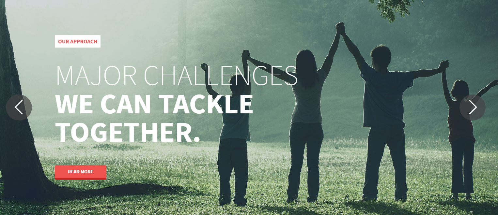
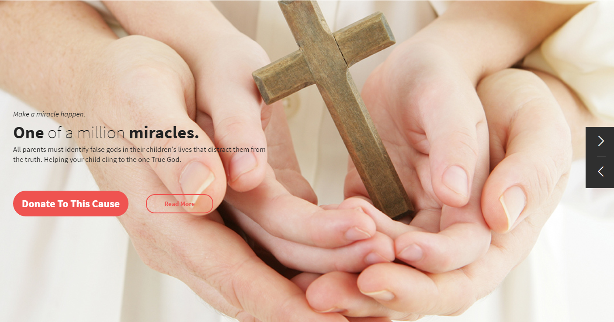
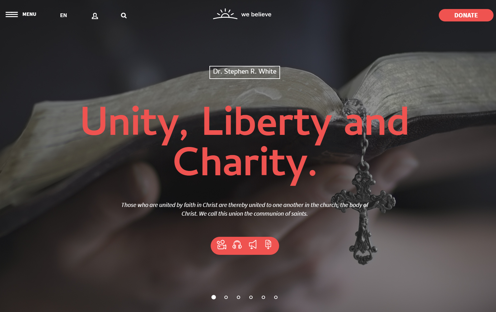
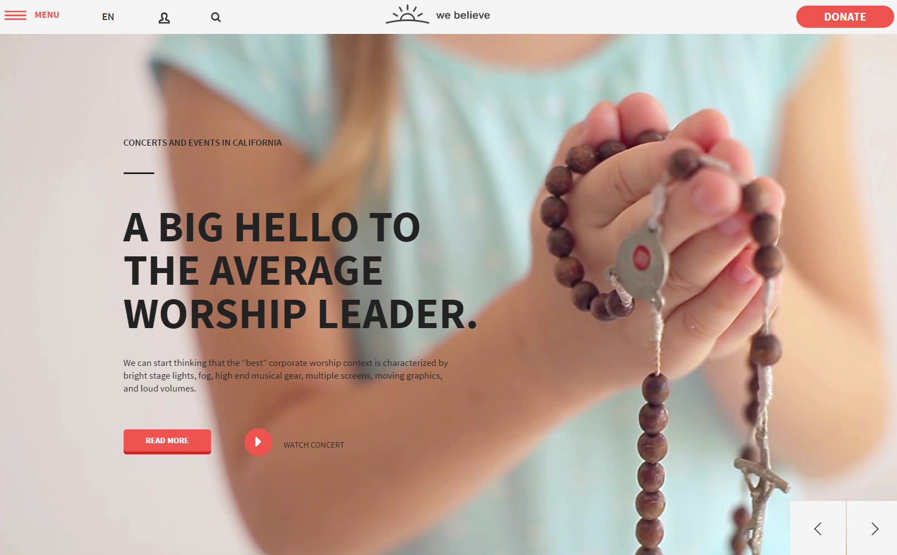
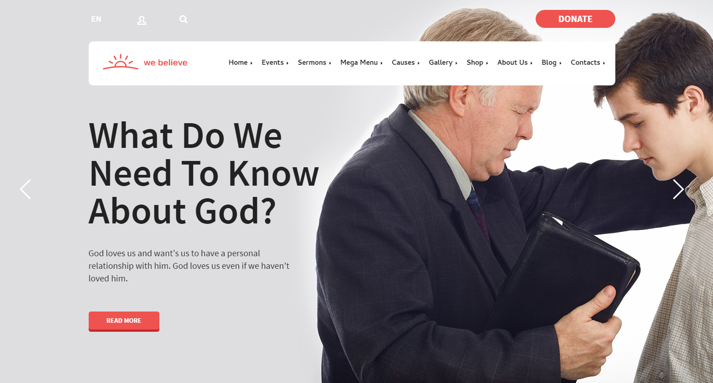

Slick Slider¶
- Documentation and examples
- http://kenwheeler.github.io/slick/
Source¶
Sass styles are in folder
template_src/sass/widgets/slider.sassJade source are in:
template_src/jade/partials/mixins/slider.jadeJs initialization are in
assets/src/assets/js/module/data-api.jsVariations¶
There are 5 variations of slider:
slider--widedefault wide slider, with prev/next arrows<!-- BEGIN SLICK SLIDER--> <div class="slider slider--wide js-dapi-slider slider--v1" data-arrows="true" data-asNavFor="true" data-dots="false" data-fade="true" data-speed="2000" data-autoplay="true"> <div class="slider__block js-slick-slider"> <div class="slider__item"></div> <...> </div> </div> <div class="slider__controls"> <button class="slider__control slider__control--prev js-slider-prev"></button> <button class="slider__control slider__control--next js-slider-next"></button> </div> </div> <!-- END SLICK SLIDER--> <!-- BEGIN SLICK SLIDER NAV--> <div class="slider slider--nav slider--nav-v1"> <div class="slider__block js-slick-slider"> <div class="slider__item"><img src="assets/media-demo/banner/thumbs/thumb-1.jpg" alt=""/></div> <...> </div> </div> <!-- END SLICK SLIDER NAV-->
slider--wide nav--v3wide slider, with custom prev/next arrows<!-- BEGIN SLICK SLIDER--> <div class="slider slider--wide js-dapi-slider slider--v3" data-arrows="true" data-asNavFor="true" data-dots="false"> <div class="slider__block js-slick-slider"> <div class="slider__item"></div> <...> </div> </div> <div class="slider__controls"> <button class="slider__control slider__control--prev js-slider-prev"></button> <button class="slider__control slider__control--next js-slider-next"></button> </div> </div> <!-- END SLICK SLIDER-->
slider--wide nav--v4wide slider, with dots navigation<!-- BEGIN SLICK SLIDER--> <div class="slider slider--wide js-dapi-slider slider--v4" data-arrows="false" data-asNavFor="false" data-dots="true" data-fade="true" data-speed="2000" data-autoplay="true" data-autoplaySpeed="4000"> <div class="slider__block js-slick-slider"> <div class="slider__item"></div> <...> </div> </div> <div class="slider__controls"> <button class="slider__control slider__control--prev js-slider-prev"></button> <button class="slider__control slider__control--next js-slider-next"></button> </div> </div> <!-- END SLICK SLIDER-->
slider--wide nav--v5wide slider, with custom prev/next arrows, and bigger height<!-- BEGIN SLICK SLIDER--> <div class="slider slider--wide js-dapi-slider slider--v5" data-arrows="true" data-asNavFor="false" data-dots="false" data-fade="true" data-speed="2000"> <div class="slider__block js-slick-slider"> <div class="slider__item"></div> <...> </div> </div> <div class="slider__controls"> <button class="slider__control slider__control--prev js-slider-prev"></button> <button class="slider__control slider__control--next js-slider-next"></button> </div> </div> <!-- END SLICK SLIDER-->
slider--wide nav--v6wide slider, with prev/next arrows, best combination withheader--v6design<!-- BEGIN SLICK SLIDER--> <div class="slider slider--wide js-dapi-slider slider--v6" data-arrows="true" data-asNavFor="false" data-dots="false" data-fade="true"> <div class="slider__block js-slick-slider"> <div class="slider__item"></div> <...> </div> </div> <div class="slider__controls"> <button class="slider__control slider__control--prev js-slider-prev"></button> <button class="slider__control slider__control--next js-slider-next"></button> </div> </div> <!-- END SLICK SLIDER-->
Options¶
Sliders are reponsive, touch-based, and easy to change.
Important configuration:
js-dapi-slider- default class which will initialize the slider, all configuration params you can send through data-* attributes, * - replace it with original name of config from Slick Slider Docs.
Examples¶
<!-- BEGIN SLICK SLIDER-->
<div class="slider slider--wide js-dapi-slider slider--v1" data-arrows="true" data-asNavFor="true" data-dots="false" data-fade="true" data-speed="2000" data-autoplay="true">
<div class="slider__block js-slick-slider">
<div class="slider__item">
<div class="slider__preview slider__preview--v1"><img src="assets/media-demo/banner/1920x660/banner-1.jpg" alt="" class="slider__preview-img"/>
</div>
<div class="slider__caption slider__caption--v1">
<div class="slider__heading slider__heading--v1">Our Approach</div>
<h1 class="slider__title slider__title--v1">Major challenges</h1>
<h4 class="slider__subtitle slider__subtitle--v1">we can tackle together.</h4>
<div class="slider__footer"><a href="about.html" class="btn--flat slider__more slider__more--v1">Read more</a>
</div>
</div>
</div>
<div class="slider__item">
<div class="slider__preview slider__preview--v2"><img src="assets/media-demo/banner/1920x660/banner-2.jpg" alt="" class="slider__preview-img"/>
</div>
<div class="slider__caption slider__caption--v2">
<h1 class="slider__title slider__title--v2">What Do We Need To Know About God?</h1>
<h4 class="slider__subtitle slider__subtitle--v2">God loves us and want’s us to have a personal relationship with him. God loves us even if we haven’t loved him.</h4>
<div class="slider__footer"><a href="community_member.html" class="btn--flat slider__more slider__more--v2">Read more</a>
</div>
</div>
</div>
<div class="slider__item">
<div class="slider__preview slider__preview--v3"><img src="assets/media-demo/banner/1920x660/banner-3.jpg" alt="" class="slider__preview-img"/>
</div>
<div class="slider__caption slider__caption--v3">
<div class="slider__heading slider__heading--v3">Make a miracle happen.</div>
<h1 class="slider__title slider__title--v3"><strong>One</strong> of a million <strong>miracles.</strong></h1>
<h4 class="slider__subtitle slider__subtitle--v3">All parents must identify false gods in their children's lives that distract them from the truth. Helping your child cling to the one True God.</h4>
<div class="slider__footer"><a href="donate.html" class="btn--flat-rounded slider__donate slider__donate--v3">Donate To This Cause</a><span class="slider__sep"></span><a href="cause_details.html" class="btn--border-brand slider__read slider__read--v3">Read More</a>
</div>
</div>
</div>
<div class="slider__item">
<div class="slider__preview slider__preview--v4"><img src="assets/media-demo/banner/1920x660/banner-4.jpg" alt="" class="slider__preview-img"/>
</div>
<div class="slider__caption slider__caption--v4">
<div class="slider__heading slider__heading--v4">Dr. Stephen R. White</div>
<h1 class="slider__title slider__title--v4">Unity, Liberty and Charity.</h1>
<h4 class="slider__subtitle slider__subtitle--v4">Those who are united by faith in Christ are thereby united to one another in the church, the body of Christ. We call this union the communion of saints.</h4>
<div class="slider__footer">
<div class="slider__links"><a href="sermon_details.html" class="slider__link-item">
<svg class="slider__link-svg">
<use xlink:href="#icon-video"></use>
</svg></a><a href="sermon_details.html" class="slider__link-item">
<svg class="slider__link-svg">
<use xlink:href="#icon-audio"></use>
</svg></a><a href="sermon_details.html" class="slider__link-item">
<svg class="slider__link-svg">
<use xlink:href="#icon-speaker"></use>
</svg></a><a href="sermon_details.html" class="slider__link-item">
<svg class="slider__link-svg">
<use xlink:href="#icon-file"></use>
</svg></a></div>
</div>
</div>
</div>
<div class="slider__item">
<div class="slider__preview slider__preview--v5">
<video poster="http://codefactory47.com/public/webelieve/media/catoliccover-big.jpg" autoplay="" loop="" class="slider-video">
<source src="http://codefactory47.com/public/webelieve/media/catolic_girl_4.mp4" type="video/mp4"/>
<source src="http://codefactory47.com/public/webelieve/media/catolic_girl_4.webm" type="video/webm"/>
</video>
</div>
<div class="slider__caption slider__caption--v5">
<div class="slider__heading slider__heading--v5">Concerts and Events in California</div>
<h1 class="slider__title slider__title--v5">A Big Hello to the Average Worship Leader.</h1>
<h4 class="slider__subtitle slider__subtitle--v5">We can start thinking that the “best” corporate worship context is characterized by bright stage lights, fog, high end musical gear, multiple screens, moving graphics, and loud volumes.</h4>
<div class="slider__footer"><a href="sermon_details.html" class="btn--flat slider__more slider__more--v5">Read more</a><a href="sermon_details.html" class="slider__watch">Watch Concert</a>
</div>
</div>
</div>
<div class="slider__item">
<div class="slider__preview slider__preview--v6"><img src="assets/media-demo/banner/1920x660/banner-6.jpg" alt="" class="slider__preview-img"/>
</div>
<div class="slider__caption slider__caption--v6">
<div class="slider__heading slider__heading--v6">Psalms 34:14</div>
<h1 class="slider__title slider__title--v6">Depart from evil, and do good, seek peace, and pursue it.</h1>
<h4 class="slider__subtitle slider__subtitle--v6">Of David. When he pretended to be insane before Abimelech, who drove him away, and he left.</h4>
<div class="slider__footer">
</div>
</div>
</div>
</div>
<div class="slider__controls">
<button class="slider__control slider__control--prev js-slider-prev"></button>
<button class="slider__control slider__control--next js-slider-next"></button>
</div>
</div>
<!-- END SLICK SLIDER-->
<!-- BEGIN SLICK SLIDER NAV-->
<div class="slider slider--nav slider--nav-v1">
<div class="slider__block js-slick-slider">
<div class="slider__item"><img src="assets/media-demo/banner/thumbs/thumb-1.jpg" alt=""/></div>
<div class="slider__item"><img src="assets/media-demo/banner/thumbs/thumb-2.jpg" alt=""/></div>
<div class="slider__item"><img src="assets/media-demo/banner/thumbs/thumb-3.jpg" alt=""/></div>
<div class="slider__item"><img src="assets/media-demo/banner/thumbs/thumb-4.jpg" alt=""/></div>
<div class="slider__item"><img src="assets/media-demo/banner/thumbs/thumb-5.jpg" alt=""/></div>
<div class="slider__item"><img src="assets/media-demo/banner/thumbs/thumb-6.jpg" alt=""/></div>
</div>
</div>
<!-- END SLICK SLIDER NAV-->